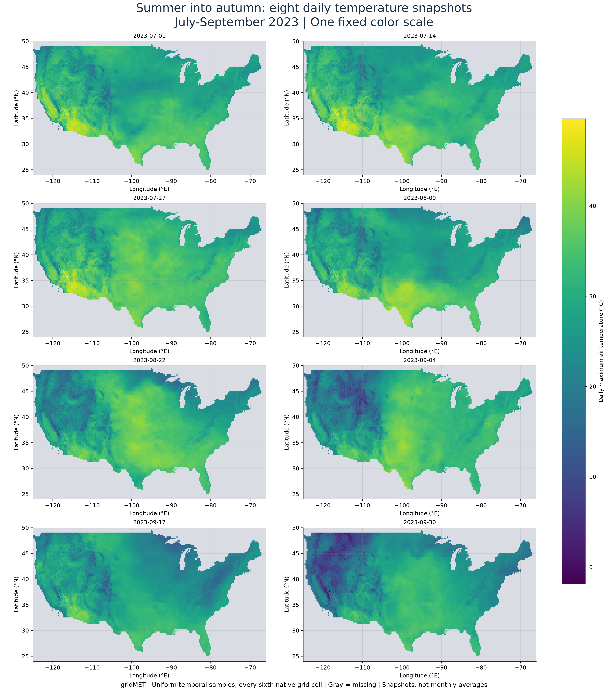
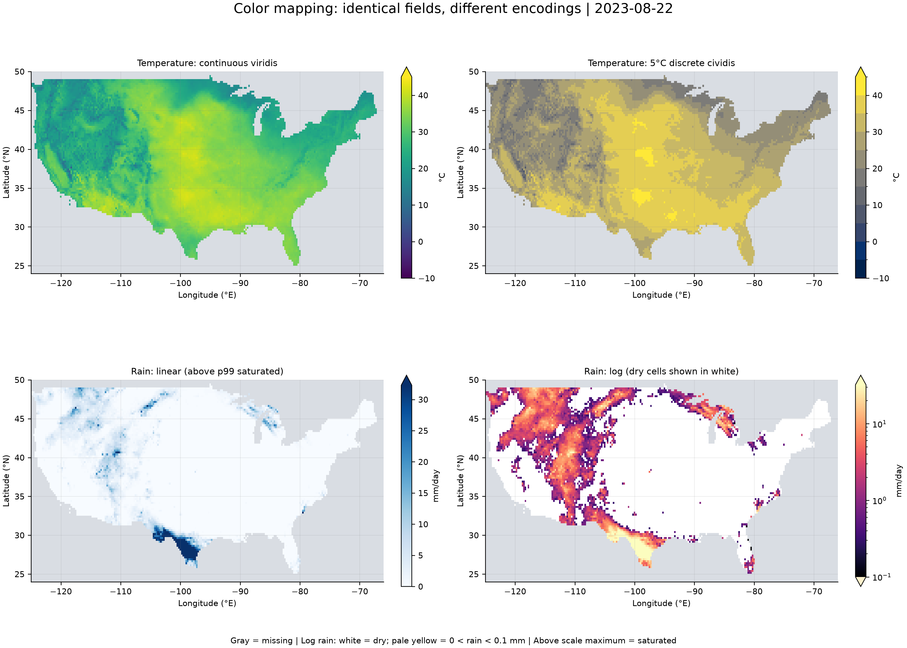
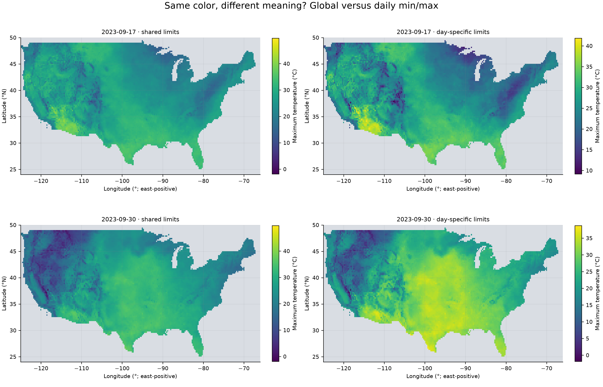
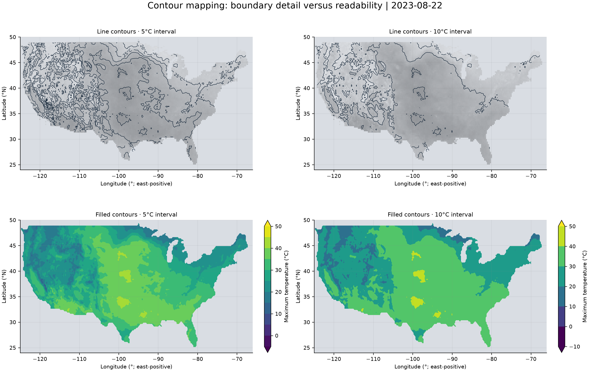
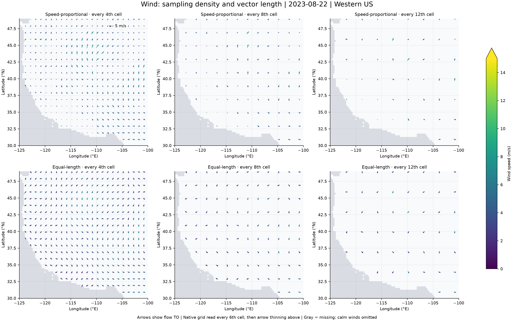
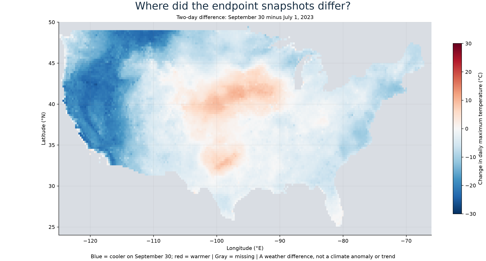
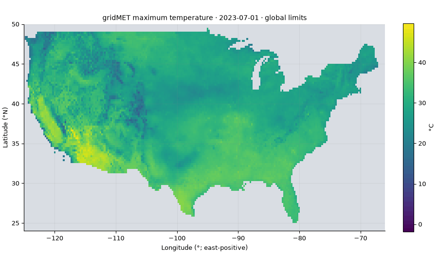
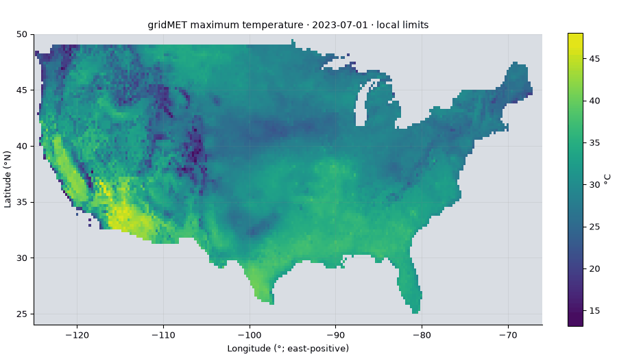
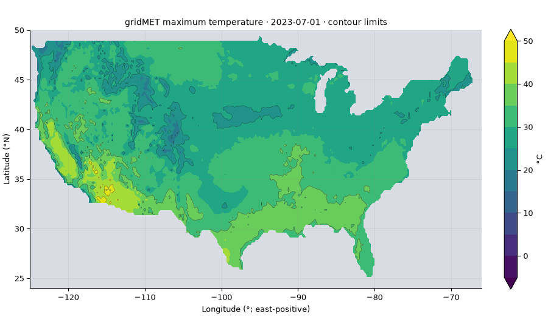

DAS732 Assignment 2 · Scientific visualization
Weather patterns from summer into autumn
July 1-September 30, 2023 | Eight uniform dates | Four real gridMET variables
Six figure sets and three animations. Click a figure for full resolution. Research plan · Report text · Validation and findings
Eight dates, one temperature scale

All eight snapshots use -1.85 to 49.65 °C. Gray means no data. Shared limits allow direct comparisons; eight dates cannot establish event duration or a seasonal trend.
Download SVGContinuous, discrete, linear and logarithmic mapping

Same fields on 2023-08-22. Temperature uses continuous viridis and 5 °C cividis classes. Of valid rain cells, 68.7% are dry and 0.00% have positive rain below 0.1 mm. Rain above 32.28 mm (1.01% of valid cells) saturates. The log panel assigns white to dry cells, pale yellow to positive rain below 0.1 mm, and gray to missing cells.
Download SVGGlobal versus local extrema

Global limits are actual minima/maxima over these eight subsampled fields. The narrowest daily span is 9.15 to 41.85 °C on 2023-09-17; the widest is -1.85 to 38.75 °C on 2023-09-30. Local scales improve within-date contrast but change the numerical meaning of the same color. Global here means the sampled space-time cube, not all 92 days or the whole Earth.
Download SVGContour spacing and fill

Same temperature field on 2023-08-22, compared at 5 and 10 °C intervals. Matplotlib/ContourPy serial grid-cell tracing uses the Marching Squares family. Lines trace equal-temperature boundaries; fills reveal broad regions. Coarse levels span the full sampled range. Interpolation smooths boundaries between available grid points; no finer-resolution measurements are created.
Download SVGWind density and arrow length

Same daily wind field on 2023-08-22. Columns retain every 4th, 8th or 12th display cell: nominal angular steps 1°, 2° or 3° after the base 0.25° subsample. Rows compare speed-proportional and equal-length arrows with identical speed colors (0-15 m/s; greater values saturated). Arrows point where air flows, not where wind comes from. Longitude/latitude bearings account for cosine latitude and the plotted aspect. Constant length makes weak winds visible but removes magnitude from length. Wind's coarser source limits terrain-scale inference.
Download SVGSigned endpoint difference

On common valid sampled cells, approximately 81.4% of area is cooler on September 30 than July 1. The approximate area-weighted difference is -5.58 °C; individual cells range from -25.80 to 11.10 °C. Weights are cosine latitude. This two-day comparison is neither a seasonal average nor a climate anomaly.
Download SVGTemperature: fixed scale

Eight uniformly spaced snapshots. Color meaning remains fixed across frames.
Temperature: daily rescaling

Eight uniformly spaced snapshots. Colors change numerical meaning between frames.
Contours: fixed levels

Eight uniformly spaced snapshots. Color meaning remains fixed across frames.
Measured snapshot statistics
Statistics describe valid subsampled grid cells. They are neither population-weighted nor full-month summaries.
| Date | Min °C | Max °C | Wet grid cells | Rain p99 mm |
|---|
| 2023-07-01 | 13.15 | 48.05 | 36.4% | 43.99 |
| 2023-07-14 | 13.55 | 49.65 | 37.5% | 39.57 |
| 2023-07-27 | 12.05 | 48.75 | 29.6% | 30.49 |
| 2023-08-09 | 10.65 | 46.55 | 37.6% | 50.67 |
| 2023-08-22 | 6.45 | 42.15 | 31.3% | 32.28 |
| 2023-09-04 | 3.65 | 42.85 | 29.9% | 33.27 |
| 2023-09-17 | 9.15 | 41.85 | 19.8% | 26.50 |
| 2023-09-30 | -1.85 | 38.75 | 27.0% | 14.28 |